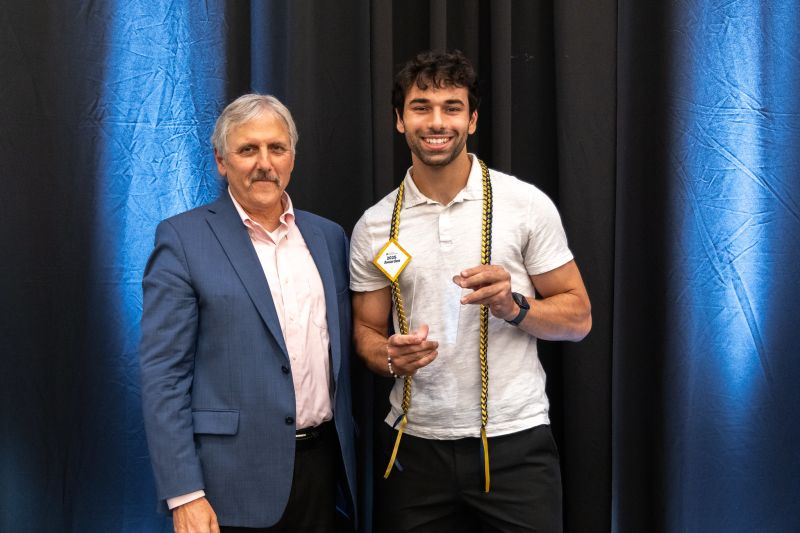

About Me
Hello! I'm Jason Eissayou, a passionate software engineer and AI enthusiast. I hold an MS in Computer Science from UC Davis (GPA 3.83) and a BS in Computer Science from CSU Stanislaus (GPA 3.92). My journey has taken me from IT support to teaching, research, and building impactful AI-powered web applications.
I love solving real-world problems with technology, whether it's building scalable cloud solutions, deploying machine learning models, or creating interactive web experiences. My technical toolkit includes Python, Java, JavaScript, SQL, Flask, Django, Next.js, Azure, Docker, and more.
What Drives Me
- Empowering users with intuitive tools
- Mentoring the next generation of devs
- Bridging AI, cloud, and UX
- Continuous learning & sharing
Beyond Code
- Mentorship: Recipient of the 2025 CS Teaching Assistant Excellence Award.
- Sports: Avid Tennis & Table Tennis player. See Tennis Profile
-
Fitness: Powerlifting enthusiast, closing in on the 1,000-lb club.
Bench: 275 Squat: 365 Deadlift: 335